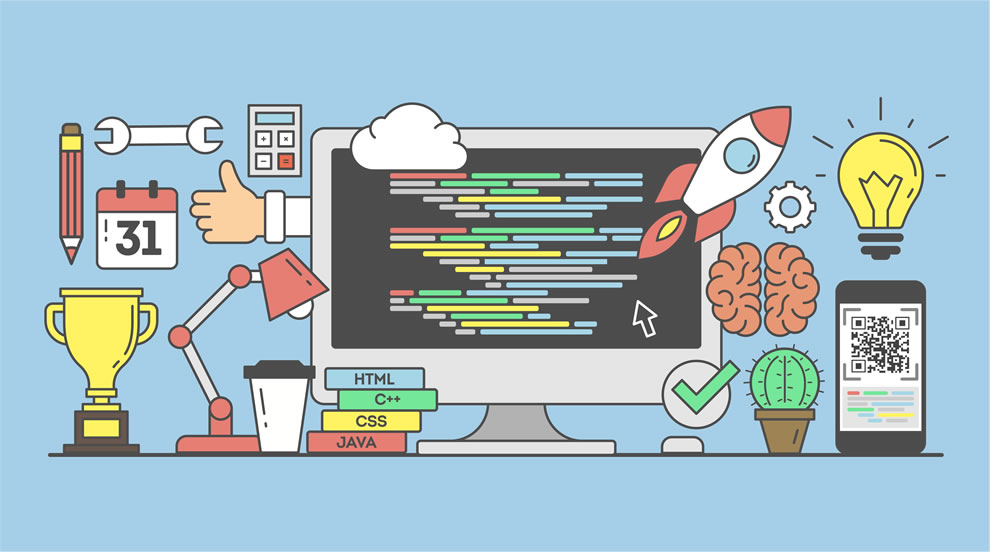
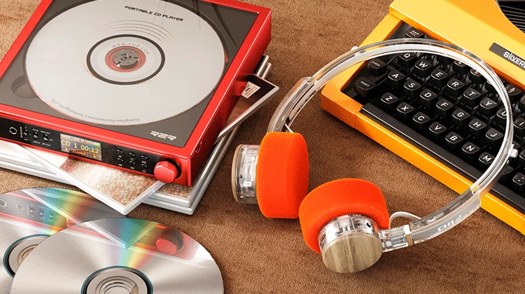

En esta sección comparto una de las tecnologías e intereses digitales que forman parte de mi día a día.
Programación Web
La programación web permite crear sitios interactivos e innovadores mediante tecnologías como HTML, CSS y JavaScript. Es una de las ramas con mayor crecimiento y creatividad en el mundo de la tecnología.

🔗 Enlace de interés: Aprende de la programacion web
🎥 Video relacionado:
Fotografía Digital
La fotografía digital consiste en la captura de imágenes mediante sensores electrónicos en lugar de película química. Nos permite registrar momentos al instante, editarlos con precisión mediante software especializado y compartirlos con el mundo entero a través de internet.
🔗 Enlace de interés: Aspectos de la fotografia
🎥 Video relacionado:
Plataformas de Música
Las plataformas de streaming musical han transformado la industria discográfica al permitir el acceso a millones de canciones desde cualquier dispositivo conectado a internet. Gracias a sus algoritmos, recomiendan nueva música basada en nuestras preferencias cotidianas.

🔗 Enlace de interés: Visita Spotify para escuchar tus listas preferidas
🎥 Video relacionado: